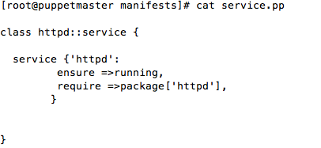
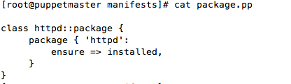
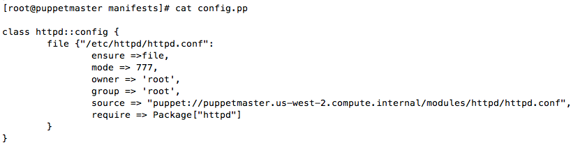
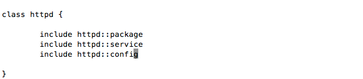

What is module ?
A module is a collection of manifests and data (such as facts, files, and templates), and they have a specific directory structure. They are useful for organizing Puppet code, as they allow you to split your code into multiple manifests.
Modules structure
To create a module, you must create a directory (whose name matches your module name) in Puppet's modules directory, and it must contain a directory called manifests, and that directory must contain an init.pp file. The init.pp file must only contain a Puppet class that matches the module name.
Puppet module example
/etc/puppet/modules/modulesname/manifest/init.pp
[root@puppetmaster]# vi init.pp
class modulesname {
// contents
}
Modules Structure
/etc/puppet/ manifest |---site.pp modules moduleName manifest |--init.pp files |--myfile.txt
1) A module is a directory. 2) The module's name must be the name of the directory. 3) It contains a manifests directory, which can contain any number of .pp files. 4) The manifests directory should always contain an init.pp file. 5) This file must contain a single class definition. The class's name must be the same as the module's name.
Modules to transfer the files
[root@puppetmaster~]vi /etc/puppet/modules/transferfiles/manifest/init.pp
Here module name is transferfiles
class transferfiles {
file {'/var/www/html/index.html':
file => present,
mode => 400,
owner => 'root'
group => 'root',
source => 'puppet://pupeptserver/modules/transferfiles/index.html',
}
[root@puppetmaster~]# vi /etc/puppet/modules/transferfiles/files/index.html
hello world
[root@puppetmaster~]vi /etc/puppet/manifest/site.pp
include transferfiles
Here we are writing four manifests.
[root@puppetmaster~]# vi /etc/puppet/modules/httpd/package.pp
vi /etc/puppet/modules/httpd/service.pp
vi /etc/puppet/modules/httpd/config.pp
[root@puppetmaster~]i /etc/puppet/modules/httpd/init.pp
[root@puppetmaster~]# vi /etc/puppet/manifest/site.pp
include httpd
The httpd.conf file is kept in the files directroy inside modules directory httpd.The file will get transfer into the client machine on which httpd service is going to get install.
[root@puppetmaster]# vi /etc/puppet/modules/httpd/files/httpd.conf
[root@puppetclient~]# puppet agent -t
Info: Retrieving pluginfacts Info: Retrieving plugin Info: Caching catalog for puppetclient.us-west-2.compute.internal Notice: /Stage[main]/Httpd::Package/Package[httpd]/ensure: created Notice: /Stage[main]/Httpd::Config/File[/etc/httpd/httpd.conf]/ensure: defined content as '{md5}e95f0f4cdc8f8a3de1b5c3884969859b' Notice: /Stage[main]/Httpd::Service/Service[httpd]/ensure: ensure changed 'stopped' to 'running' Info: /Stage[main]/Httpd::Service/Service[httpd]: Unscheduling refresh on Service[httpd] Notice: Finished catalog run in 3.20 seconds